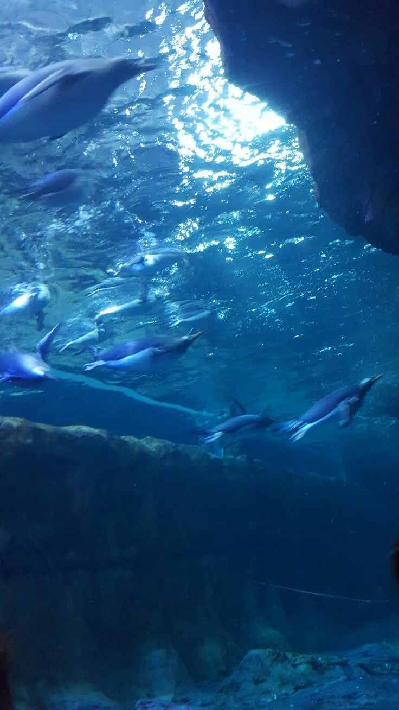

Research
Blue Senses is Florencia’s research thread linking anthroposophic sense theory, neuroscience and environmental psychology to her studio practice — inhabiting the sense, and making the invisible visible.
Her academic specialisation in Neuroarchitecture, Cognitive Neuroscience & Environmental Psychology (INESEM, Granada, 2023–24) sits alongside a Customer Experience Management certification (FIU, Florida International University, 2016–17) and three decades of applied research at FADU‑UBA.

Selected Papers & Congresses